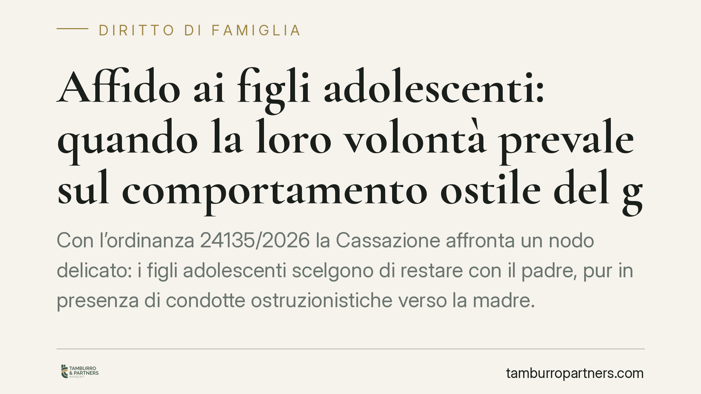

Affido ai figli adolescenti: quando la loro volontà prevale sul comportamento ostile del genitore
Con l'ordinanza 24135/2026 la Cassazione affronta un nodo delicato: i figli adolescenti scelgono di restare con il padre, pur in presenza di condotte ostruzionistiche verso la madre. I giudici rispettano quella volontà per non imporre un allontanamento traumatico, ma avvertono il collocatario: impedire le visite integra un reato. Un equilibrio tra ascolto del minore e tutela del rapporto con entrambi i genitori.

Il caso
Una madre impugna la decisione della Corte d'Appello che ha confermato la collocazione prevalente dei figli adolescenti presso il padre. La doglianza è netta: il genitore collocatario avrebbe alimentato l'ostilità dei ragazzi verso di lei, ostacolando il regime di visite.
La Cassazione, con ordinanza 24135/2026, rigetta il ricorso. Non perché la condotta del padre sia irrilevante, ma perché la volontà espressa dai figli — adolescenti, dunque in grado di formare un'opinione consapevole — è stata ritenuta prevalente rispetto al rischio di un allontanamento forzato. I giudici bilanciano due interessi: evitare il trauma dello sradicamento e non premiare chi manipola.
Inquadramento normativo
Il perno è l'ascolto del minore. Per i ragazzi che hanno compiuto dodici anni — o che, pur più giovani, abbiano capacità di discernimento — l'audizione è obbligatoria e le loro opinioni vanno tenute in considerazione in funzione dell'età e del grado di maturità. Non si tratta di un diritto di veto: il giudice resta libero di discostarsene, ma deve motivare.
Sul versante dei provvedimenti limitativi, gli artt. 330 e 333 c.c. consentono al tribunale di intervenire sulla responsabilità genitoriale quando la condotta di un genitore è pregiudizievole per il figlio. L'allontanamento, però, è misura estrema: va adottato solo se proporzionato e se non esistono alternative meno invasive. È il principio che discende anche dall'art. 8 CEDU, che tutela la vita familiare e impone agli Stati di preservare, per quanto possibile, il legame tra genitori e figli.
Il richiamo più severo riguarda l'art. 388, comma 2, c.p. (mancata esecuzione dolosa di un provvedimento del giudice). Ostacolare in modo sistematico le visite stabilite da un provvedimento non è una questione privata tra ex coniugi: può configurare un reato. La Cassazione lo ribadisce con chiarezza, trasformando un ammonimento in un avvertimento concreto.
Implicazioni pratiche
La pronuncia offre due letture apparentemente in tensione, ma coerenti.
Da un lato, la volontà del figlio adolescente ha un peso reale. Imporre a un ragazzo di sedici anni di trasferirsi contro la sua espressa contrarietà rischia di produrre un danno maggiore del male che si intende curare. Il giudice non può ignorare questa realtà psicologica.
Dall'altro, chi ottiene la collocazione non riceve un salvacondotto. Il comportamento ostile — l'alimentare l'avversione verso l'altro genitore, il frapporre ostacoli alle visite — resta illecito e penalmente rilevante. La scelta dei figli protegge loro, non legittima le manovre di chi li ha condizionati.
Per il genitore che subisce l'ostruzionismo, il messaggio è che esistono strumenti ulteriori rispetto al solo ricorso civile: la via penale e gli interventi di sostegno (servizi sociali, coordinatore genitoriale) possono operare in parallelo per ricostruire il rapporto.
Cosa fare in concreto
- Documentate ogni episodio. Annotate date, orari e modalità delle visite negate o ostacolate: messaggi, testimonianze, verbali dei servizi sociali costituiscono prova utile sia in sede civile che penale.
- Non reagite con contro-condotte. Rispondere all'ostruzionismo trattenendo i figli o sospendendo il mantenimento vi espone a sua volta a responsabilità. Mantenete la correttezza formale.
- Valutate la denuncia ex art. 388 c.p. quando l'ostacolo alle visite è sistematico e doloso. Confrontatevi prima con un legale per verificare la sussistenza dei presupposti.
- Chiedete l'attivazione di strumenti di supporto. Il coordinatore genitoriale e gli interventi dei servizi sociali possono favorire il recupero della relazione e fornire elementi oggettivi al giudice.
- Preparate con cura l'ascolto del minore. L'audizione non va forzata né strumentalizzata: consigliamo di affrontarla con il supporto di professionisti, evitando qualsiasi condotta che possa apparire come un condizionamento.
La decisione conferma una linea ormai consolidata: il minore è soggetto da ascoltare, non oggetto da contendere. Ma l'ascolto non cancella le responsabilità di chi usa i figli come leva nel conflitto.
---
*Contributo informativo a cura di Tamburro & Partners - Avv. Giuseppe Tamburro. Non costituisce parere legale.*
Ogni famiglia ha il suo equilibrio.
Separazione, divorzio, affidamento, assegno: se vuoi un confronto riservato su una specifica situazione, scrivi allo studio. Ti rispondiamo entro un giorno lavorativo.